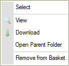
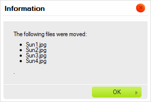

Slo啪ka Ko拧铆k, kter谩 je dostupn谩 v Panelu slo啪ek otev艡e Panel Ko拧铆ku.
Ko拧铆k je virtu谩ln铆 a do膷asn茅 煤lo啪i拧t臎, kter茅 m暖啪e b媒t pou啪ito k prov谩d臎n铆 hromadn媒ch operac铆 se soubory v CKFinder. Je to virtu谩ln铆 煤lo啪i拧t臎, proto啪e soubory, kter茅 jsou um铆st臎ny do Ko拧铆ku nejsou fyzicky p艡esunuty z jejich nad艡azen媒ch slo啪ek.
Obr谩zek n铆啪e p艡edstavuje Panel Ko拧铆ku po kliknut铆 na slo啪ku Ko拧铆k (Basket) v Panelu slo啪ek.
Pozn谩mka: Slo啪ka Ko拧铆k je soukrom谩 v tom smyslu, 啪e nen铆 sd铆lena s ostatn铆mi u啪ivateli a je sv谩z谩na s relac铆 Va拧eho prohl铆啪e膷e.
Na za膷谩tku ka啪d茅 relace CKFinder je Ko拧铆k pr谩zdn媒. Bude zobrazena zpr谩va vyz媒vaj铆c铆 V谩s k p艡et谩hnut铆 soubor暖 do Ko拧铆ku. Abyste toto provedli, p艡ejd臎te do slo啪ky, kter谩 obsahuje soubory, kter茅 chcete pou啪铆t, p艡et谩hn臎te je do slo啪ky Ko拧铆k v Panelu slo啪ek.

Soubor by se nyn铆 m臎l objevit ve slo啪ce Ko拧铆k.
Kdy啪 je soubor um铆st臎n do Ko拧铆ku, jeho kontextov茅 menu se zm臎n铆, aby zahrnovalo pouze ty operace, kter茅 jsou dostupn茅 v t茅to zvl谩拧tn铆 slo啪ce.

Existuj铆 dva zp暖soby jak soubor odstranit z Ko拧铆ku. Za prv茅 m暖啪ete odstranit jednotliv茅 soubory zvolen铆m mo啪nosti Odstranit z Ko拧铆ku (Remove from Basket) z kontextov茅ho menu souboru. Kdy啪 zvol铆te mo啪nost odstran臎n铆 z kontextov茅ho menu, bude zobrazena potvrzovac铆 zpr谩va.

M暖啪ete tak茅 odstranit v拧echny soubory najednou kliknut铆m na tla膷铆tko Vy膷istit Ko拧铆k (Clear Basket) v panelu n谩stroj暖. Kdy啪 toto provedete, budete vyzv谩ni k potvrzen铆, zdali opravdu zam媒拧l铆te odstranit ve拧ker媒 obsah Ko拧铆ku.

Pozn谩mka: Odstran臎n铆 souboru z Ko拧铆ku ho nesma啪e ze souborov茅ho syst茅mu. St谩le bude dostupn媒 v nad艡azen茅 slo啪ce.
Jak je zm铆n臎no v媒拧e, Ko拧铆k je virtu谩ln铆 slo啪ka, kter谩 obsahuje soubory, kter茅 jsou fyzicky um铆st臎ny v jin媒ch slo啪k谩ch souborov茅ho syst茅mu. Pokud si chcete prohl茅dnout zdrojovou slo啪ku souboru, zvolte mo啪nost Otev艡铆t nad艡azenou slo啪ku (Open Parent Folder) z kontextov茅ho menu souboru. CKFinder zobraz铆 slo啪ku, v kter茅 se soubor nach谩z铆.
Jakmile pohodln臎 um铆st铆te n臎kter茅 soubory Ko拧铆ku, budete je moci zkop铆rovat do jin茅 (fyzick茅) slo啪ky. Abyste tohoto dos谩hli, zvolte c铆lovou slo啪ku v Panelu slo啪ek a zvolte mo啪nost Kop铆rovat soubory z Ko拧铆ku (Copy Files from Basket) z jej铆ho kontextov茅ho menu.
Bude zobrazena potvrzuj铆c铆 zpr谩va vypisuj铆c铆 soubory, kter茅 byly zkop铆rov谩ny do c铆lov茅 slo啪ky.

Soubory budou zkop铆rov谩ny a jejich kopie um铆st臎ny do c铆lov茅 slo啪ky. C铆lov谩 slo啪ka z暖stane nedot膷ena.
Ko拧铆k je tak茅 velmi u啪ite膷n媒, pokud chcete p艡esunovat soubory mezi slo啪kami. Jakmile um铆st铆te n臎jak茅 soubory v Ko拧铆ku, vyberte c铆lovou slo啪ku v Panelu slo啪ek a zvolte mo啪nost P艡esunout soubory z Ko拧铆ku (Move Files from Basket) z jej铆ho kontextov茅ho menu.
Bude zobrazena potvrzuj铆c铆 zpr谩va vypisuj铆c铆 soubory, kter茅 byly p艡esunuty do c铆lov茅 slo啪ky.

Soubory budou odstran臎ny z c铆lov茅 slo啪ky a vlo啪eny do c铆lov茅.